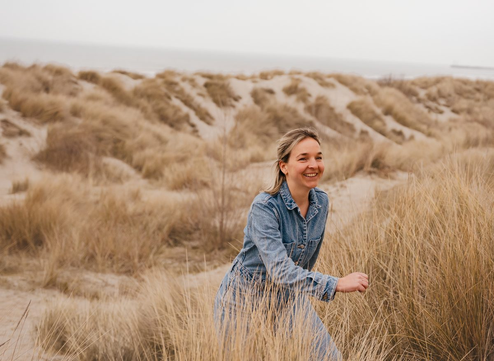

Ik ben Nele Meuleman, kleuterleidster, mama van drie en kindercoach in hart en nieren. Ik start deze kindercoachpraktijk vanuit mijn passie voor kinderen.
Bij De Groeiplek draait alles om verbinding en groei zonder moeten.
Ik begeleid kinderen in het herkennen en omgaan met hun emoties, zodat ze sterker, veerkrachtiger en zelfbewuster worden.
Ik ben er voor kinderen die een extra duwtje in de rug nodig hebben om verder te groeien. Samen gaan we op zoek naar wat kan helpen bij het probleem waar zij op botsen.
Mijn doel is een warme, veilige plek te creëren waar kinderen mogen landen met hun verhaal.
Een plek waar je gewoon mag zijn, met alles wat er is.
Kom maar, je mag hier zijn.
Neem contact op
Nele Meuleman
Ik ben Nele, vrouw van Arne en mama van drie fantastische zonen. In 2017 werd ik voor het eerst mama van Tuur. Een kleine twee jaar later werd Kas geboren en in 2022 maakte Lou ons gezin compleet.
Het moederschap en het leven hebben me ondertussen al heel wat geleerd: over liefde, loslaten, geduld én over mezelf. Ik geniet intens van het mama-zijn en van mijn kinderen. Die vreugde wil ik graag delen. Tegelijk weet ik ook dat het ouderschap soms druk, chaotisch en overweldigend kan zijn. En dat is helemaal oké.
Door de jaren heen leerde ik wat zelfzorg écht betekent en hoe belangrijk het is om aanwezig en verbonden te kunnen zijn met kinderen. Ik ging parttime werken en ging bewuster op zoek naar momenten om op te laden. Muziek voelt voor mij als een oplaadstation. In september 2025 startte ik met gitaarlessen, wat me veel troost en ontspanning bracht. Ook sporten helpt me om mijn hoofd leeg te maken en nieuwe energie op te doen.
Ik volg yoga- en pilateslessen, ga graag joggen, zwemmen en geniet wel eens van een mooie wandeling in onze Westhoek. Daarnaast haal ik veel plezier uit lekker eten, gezellige momenten met familie en vrienden en de vele kleine dingen die het leven bijzonder maken.
Daarnaast ben ik een gedreven kleuterleidster. In september 2012 ging ik aan de slag in de Ieperse basisscholen. Ik vond al snel mijn plek in Sint-Jan, waar ik vooral de kleuters van de eerste en tweede kleuterklas onder mijn vleugels nam. Na 14 jaar ervaring in het onderwijs voelde ik dat het tijd was om kinderen op een andere, diepere manier te ondersteunen.
Zo ontstond De Groeiplek: een plek waar kinderen en ouders zich gezien, gehoord en gesteund mogen voelen.
Ik ben gedreven, openhartig en gepassioneerd. Mijn missie is helder: kinderen en ouders samen sterker, veerkrachtiger en gelukkiger laten voelen. Hen een plek bieden waar ze gewoon mogen zijn, om van daaruit verder te groeien.
Een plek om te groeien
In mijn praktijk begeleid ik kinderen tot 12 jaar op hun eigen tempo. Ik help hen stil te staan bij wat ze voelen en leer hen daar op een veilige, helpende manier mee om te gaan.
Je bent welkom met vragen rond zelfvertrouwen, emotieregulatie, veerkracht, driftbuien, angsten of verlies.
Lees meer over de werkingEen plek om te ontspannen
Kindermassage is er voor kinderen van 4 tot 12 jaar en biedt een rustgevend moment van veiligheid en geborgenheid. Het helpt kinderen ontspannen, versterkt het lichaamsbewustzijn en kan ondersteuning bieden bij spanning, onrust, overprikkeling, slaapproblemen, faalangst, concentratieproblemen en hoofdpijn.
Hier kan je vertragen en tot rust komen.
Maak een afspraakEen plek om te verbinden
De groeiboxen bevatten kant-en-klare activiteiten die uitnodigen tot samenzijn, zonder voorbereiding. Op een speelse en laagdrempelige manier creëren ze ruimte voor verbinding.
Eenvoudig, waardevol en met volle aandacht voor elkaar.
Bekijk de groeiboxenBij De Groeiplek staat het kind centraal. Ik werk op het tempo van je kind, zonder kant-en-klare oplossingen of prestatiedruk. Elk traject is uniek en afgestemd op wat je kind nodig heeft op dat moment.
Kindercoaching is geen therapie en geen snelle oplossing. Het is een zachte, ondersteunende begeleiding die vertrekt vanuit het kind.
Een eerste contact verloopt telefonisch of online en is volledig vrijblijvend. Ik luister naar je verhaal en we bekijken samen of mijn manier van werken aansluit bij de noden van je kind en jullie gezin.
Voor de start plannen we een intakegesprek, zonder het kind. Dit kan plaatsvinden in de praktijk of in de thuiscontext.
Tijdens dit gesprek nemen we rustig de tijd om stil te staan bij:
Een sessie duurt ongeveer 60 minuten en vindt plaats zonder ouders, zodat je kind zich vrij kan uiten. Je brengt je kind tot aan de praktijk en gaat daarna even naar buiten, aangezien er momenteel geen wachtruimte is.
De laatste tien minuten van de sessie mag je opnieuw aanbellen en krijg je een korte inkijk in wat we samen hebben gedaan.
Bij de start van elke sessie nemen we rustig de tijd om te landen. Ik bied sensorisch materiaal, speelgoed en prentenboeken aan, afgestemd op de noden van je kind.
Tijdens de sessies werk ik spelenderwijs en afgestemd op je kind. We verkennen samen wat er speelt, hoe sterk dit aanvoelt en welke emoties daarbij horen. Vaak maken we dit zichtbaar door te tekenen of te schilderen.
We kijken samen:
Ik maak gebruik van verschillende technieken zoals:
Alles gebeurt in een veilige sfeer, zonder moeten.
Je kind krijgt een persoonlijk boekje/doosje waarin successen, inzichten en helpende momenten worden verzameld. Dit boekje/doosje groeit mee en helpt je kind om te zien wat al gelukt is en wat kracht geeft.
Na elke sessie ontvang je als ouder een kort verslag via mail.
| Kindercoaching | |
|---|---|
| KennismakingsgesprekTelefonisch eerste contact om even af te stemmen. | gratis |
| IntakegesprekBespreken van de hulpvraag samen met ouder(s). | €50 |
| CoachingsessieEen individueel moment voor je kind, op zijn of haar tempo. | €60 |
| Workshop “Samen groeien binnen het gezin”Een verbindend moment voor ouder(s) en kind(eren). | €75 |
| Massage | |
| KindermassageEen moment van rust en ontspanning. | €50 |
| Ontspannende lichaamsmassage (volwassene) | €70 |
| Groeiboxen | |
| Bubble-boxVoor thuis, om samen te vertragen en te verbinden. | €20 |
Je betaalt per sessie, zonder vaste verplichting. We bekijken samen wat op dit moment helpend is voor jou en je kind. Een doorverwijzing is niet nodig. Omdat de mutualiteit niet tussenkomt, is terugbetaling voor deze sessies niet mogelijk.